layout: true .toc.banner[ .logo.remarkonly.left[ <img src="https://nplatonov.github.io/sevin-logo.jpg" width="71"/> ] .shorttitle[ Н. Платонов <br> Ледовая фенология ] ] --- name: home class: metadata customtitle middle left giphy .toc.sidebar.left-column[ .outline[ # [Введение ](#H3bbf1) # [Методы ](#H0d03e) # [Результаты](#He23e8) # [Верификация ](#H43113) # [Факторы окружающей среды ](#H18b1d) # [Выводы ](#H1d041) ] ] .toc.mainbar.right-column[ .author[Платонов Н. Г., Соловьёва М. А., Рожнов В. В.] .institute[ИПЭЭ РАН, г. Москва] .title[ Ледовая фенология Каспийского моря ] .subtitle[ ] .what[ Международная научная конференция <br>«**Каспийский тюлень: индикатор состояния каспийской экосистемы**» ] .where[ Прикаспийский институт биологических ресурсов ДФИЦ РАН, г. Махачкала ] .when[ 12-14 ноября 2024 г. .updated[Обновлено: 2024-11-05 18:10] ] ] --- class: notable inverse .onlyremark[ .scrollable.font60[ .double[ ## Аннотация Каспийский тюлень — пагофильный вид ластоногих, использующий морской лёд, прежде всего, для размножения, включая спаривание и лактацию, а также для отдыха в зимний период. Продолжительность ледового сезона, особенно с момента появления детенышей, определяет выживаемость бельков. Поэтому оценки сроков появления и исчезновения льда на различных участках акватории Каспийского моря дополняют набор параметров, используемых для оценки благополучия популяции каспийского тюленя, а применение многолетних рядов данных позволяет осуществлять мониторинг ледовых местообитаний. В связи с этим в данной работе рассмотрена возможность применения набора данных по ледовой фенологии озёр северного полушария "Daily Lake Ice Phenology Time Series Derived from AMSR-E and AMSR2" Национального центра данных по льду и снегу (США) для построения многолетних карт сроков появления и исчезновения льда Каспийского моря за период с 2002 по 2022 гг. Для оценки сроков ледовой фенологии применена унимодальная изотоническая регрессия временных рядов сплоченности морского льда, выделенной из ледовых категорий, с предварительной пространственно-временной аппроксимацией пропусков исходных данных. Для верификации использовались фенокарты, построенные тем же методом, по данным ретроспективного анализа поверхностных океанографических данных MERRA-2 и по данным сплоченности морского льда в ежедневной оценке глобальной температуры поверхности моря на основе спутниковых наблюдений. Ежегодно, в среднем, 63 тыс. км2 (стандартное отклонение 16 тыс. км2) Каспийского моря покрывается льдом не менее чем на 6 дней. Больше всего такого льда было зимой 2005/2006 гг., 81 тыс. км2, а меньше всего – зимой 2019/2020 гг., 23 тыс. км2. Тенденция изменения этой площади составляет -1.0±0.6 тыс. км2 год-1 с умеренной статистической значимостью 90%. За период наблюдений с зимы 2002/2003 по зиму 2021/2022 гг. площадь замерзающей акватории Каспия сократилась на 27% с 73 до 53 тыс. км2. Возможная недооценка этого параметра связана с пропуском в исходных данных. Ледообразование на обычно замерзающей (не менее 9 раз за 10 лет) акватории Каспия происходит, в среднем, 15 декабря (стандартное отклонение 14 дней). Экстремальные значения наблюдались для зим 2020/2021 гг., 23 ноября, и 2010/2011 гг., 07 января. За многолетний период наблюдений отмечается всё более раннее появление льда (-1.0±0.5 дней год-1, S=94%), с 25 декабря зимой 2002/2003 гг. до 06 декабря зимой 2021/2022 гг. В среднем, обычно замерзающая акватория Каспийского моря освобождается ото льда 11 марта (стандартное отклонение 14 дней). Наиболее раннее ледотаяние наблюдалось зимой 2019/2020 г., 05 февраля, а наиболее позднее – зимой 2002/2003 г., 01 апреля. За сезоны с 2002/2003 по 2021/2022 гг. отмечается статистически значимая (S=97%) линейная тенденция более раннего исчезновения льда со скоростью 1.1±0.5 дней год-1, с 21 марта в начале исследуемого периода до 28 февраля в конце. Продолжительность ледового сезона обычно замерзающей акватории Каспийского моря составляет, в среднем, 86 дней (стандартное отклонение 19 дней). По покрытию льдом наиболее долгой была зима 2002/2003 гг., 118 дней, а наиболее короткой – зима 2021/2022 гг., 44 дня. Линейная тенденция изменения длительности ледового периода не обнаруживается (-0.2±0.8 дней год-1, S=16%). Ледообразование в северном Каспии задерживается при повышении осенних температур воздуха над Прикаспийской низменностью в начале зимы. Раннее таяние каспийского льда связано с более высокой температурой воздуха преимущественно над средним Каспием. Льда в Каспийском море, как правило, образуется больше, если над западным Каспием и прилегающей территорией в декабре-январе воздух более холодный. ] ] ] --- name: H3bbf1 .toc.sidebar.left-column[ .outline[ # [Введение ](#H3bbf1).fg[] ## [Ледовый покров ](#H3bbf1).fg[].bg[] ## [Ледовые фенокарты ](#H5ae9c) # [Методы ](#H0d03e) # [Результаты](#He23e8) # [Верификация ](#H43113) # [Факторы окружающей среды ](#H18b1d) # [Выводы ](#H1d041) ] ] .toc.mainbar.right-column[ .header.broad[ Ледовый покров ] .pulling[ .pull-left-70[ <img src="https://pricom.kz/images/2021/12/tyuleni.jpeg" width="1330" height="390" extra style="display: block; margin: auto auto auto 0;" /> ] .pull-right-30[ ] ] + Каспийский тюлень + Размножение (спаривание, лактация) + Локальный климат + Положительные и отрицательные обратные связи + Хозяйственная деятельность + Судоходство ] --- name: H5ae9c .toc.sidebar.left-column[ .outline[ # [Введение ](#H3bbf1).fg[] ## [Ледовый покров ](#H3bbf1) ## [Ледовые фенокарты ](#H5ae9c).fg[] ### [Особенности ](#H5ae9c).fg[].bg[] ### [Характеристики ](#Ha31c7) # [Методы ](#H0d03e) # [Результаты](#He23e8) # [Верификация ](#H43113) # [Факторы окружающей среды ](#H18b1d) # [Выводы ](#H1d041) ] ] .toc.mainbar.right-column[ .header.broad[ Особенности ] Единицы измерения на фенокартах – даты. .clarify[ *Pros*: + Ежедневные ледовые карты на протяжении нескольких месяцев отображаются на одной карте + Карта оценки продолжительности ледового сезона в единицах «дни», «недели». ] .clarify[ *Cons*: + Сплоченность льда или категории ледового покрова исходных данных теряются. + Неоднозначность использования параметров с единицами «дата» в математических моделях. ] ] --- name: Ha31c7 .toc.sidebar.left-column[ .outline[ # [Введение ](#H3bbf1).fg[] ## [Ледовый покров ](#H3bbf1) ## [Ледовые фенокарты ](#H5ae9c).fg[] ### [Особенности ](#H5ae9c) ### [Характеристики ](#Ha31c7).fg[].bg[] # [Методы ](#H0d03e) # [Результаты](#He23e8) # [Верификация ](#H43113) # [Факторы окружающей среды ](#H18b1d) # [Выводы ](#H1d041) ] ] .toc.mainbar.right-column[ .header.broad[ Характеристики ] .clarify[ Сроки появление льда: + Образование льда + Импорт ледяных полей ] .clarify[ Сроки исчезновение льда: + Таяние льда + Экспорт ледяных полей ] ] --- name: H0d03e .toc.sidebar.left-column[ .outline[ # [Введение ](#H3bbf1) # [Методы ](#H0d03e).fg[] ## [Данные ](#H0d03e).fg[].bg[] ## [Обработка ](#H2d236) ## [Изотоническая регрессия ](#Hd9074) # [Результаты](#He23e8) # [Верификация ](#H43113) # [Факторы окружающей среды ](#H18b1d) # [Выводы ](#H1d041) ] ] .toc.mainbar.right-column[ .header.broad[ Данные ] Временной ряд ежедневных явлений ледового покрова озер на основе AMSR-E и AMSR2 данных <span class="cite hovertext" data-hover="Daily Lake Ice Phenology Time Series Derived from AMSR-E and AMSR2"><a name=cite-lakeice0726></a>([Du et al., 2017](#bib))</span>. <img src="assets/animated-sia2020.gif" width="1330" height="598" expand style="display: block; margin: auto auto auto 0;" /> ] --- name: H2d236 .toc.sidebar.left-column[ .outline[ # [Введение ](#H3bbf1) # [Методы ](#H0d03e).fg[] ## [Данные ](#H0d03e) ## [Обработка ](#H2d236) <span class="bullet bullet-active">[•](#H2d236)</span><span class="bullet mslide13m">[•](#nominal)</span><span class="bullet mslide14m">[•](#interval)</span>.fg[].bg[] ## [Изотоническая регрессия ](#Hd9074) # [Результаты](#He23e8) # [Верификация ](#H43113) # [Факторы окружающей среды ](#H18b1d) # [Выводы ](#H1d041) ] ] .toc.mainbar.right-column[ .header.broad[ Обработка ] + Преобразование из номинальной шкалы (категории льда) в интервальную (сплоченность льда) + Заполнение пропусков в данных + Пространственная экстраполяция<sup><a href=#fn><span class="hovertext" data-hover="В данной работе – не кригинг">1<span></a></sup><span id=ref1> + Временна́я экстраполяция + Выделение района исследований (постобработка) ] --- name: nominal .toc.sidebar.left-column[ .outline[ # [Введение ](#H3bbf1) # [Методы ](#H0d03e).fg[] ## [Данные ](#H0d03e) ## [Обработка ](#H2d236) <span class="bullet bullet">[•](#H2d236)</span><span class="bullet bullet-active">[•](#nominal)</span><span class="bullet mslide14m">[•](#interval)</span>.fg[].bg[] ## [Изотоническая регрессия ](#Hd9074) # [Результаты](#He23e8) # [Верификация ](#H43113) # [Факторы окружающей среды ](#H18b1d) # [Выводы ](#H1d041) ] ] .toc.mainbar.right-column[ .header.broad[ Обработка ] <div class="figure" style="text-align: left"> 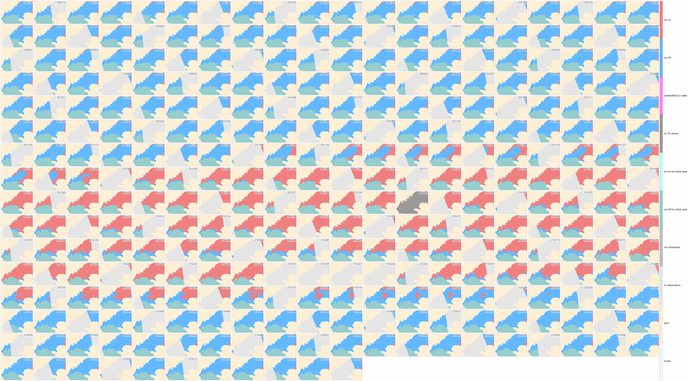 <p class="caption">Номинальная шкала (категории льда)</p> </div> Ср. с [интервальной шкалой](#interval) (сплоченность льда). ] --- name: interval .toc.sidebar.left-column[ .outline[ # [Введение ](#H3bbf1) # [Методы ](#H0d03e).fg[] ## [Данные ](#H0d03e) ## [Обработка ](#H2d236) <span class="bullet bullet">[•](#H2d236)</span><span class="bullet bullet">[•](#nominal)</span><span class="bullet bullet-active">[•](#interval)</span>.fg[].bg[] ## [Изотоническая регрессия ](#Hd9074) # [Результаты](#He23e8) # [Верификация ](#H43113) # [Факторы окружающей среды ](#H18b1d) # [Выводы ](#H1d041) ] ] .toc.mainbar.right-column[ .header.broad[ Обработка ] <div class="figure" style="text-align: left"> 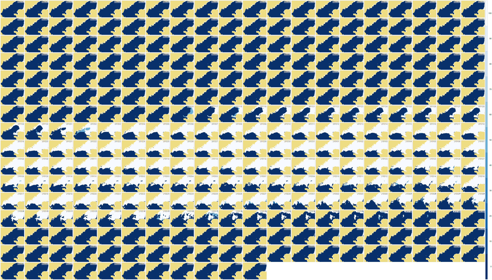 <p class="caption">Интервальная шкала (сплоченность льда)</p> </div> Ср. с [номинальной шкалой](#nominal) (категории льда). ] --- name: Hd9074 .toc.sidebar.left-column[ .outline[ # [Введение ](#H3bbf1) # [Методы ](#H0d03e).fg[] ## [Данные ](#H0d03e) ## [Обработка ](#H2d236) ## [Изотоническая регрессия ](#Hd9074) <span class="bullet bullet-active">[•](#Hd9074)</span><span class="bullet mslide16m">[•](#H20e0d)</span><span class="bullet mslide17m">[•](#H57e7e)</span>.fg[].bg[] # [Результаты](#He23e8) # [Верификация ](#H43113) # [Факторы окружающей среды ](#H18b1d) # [Выводы ](#H1d041) ] ] .toc.mainbar.right-column[ .header.broad[ Изотоническая регрессия ] Применение унимодальной изотонической регрессии <span class="cite hovertext" data-hover="Locating a maximum using isotonic regression"><a name=cite-Turner1997></a>([Turner and Wollan, 1997](#bib))</span> для аппроксимации временно́го ряда сплоченности морского льда. Предшественник: + Аппроксимация асимптотическими функциями Гомперца и несимметричной Гаусса <span class="cite hovertext" data-hover="Перемещение самки белого медведя в Карском море в период летнего таяния льда"><a name=cite-Rozhnov2017_hutuda_ru></a>([Рожнов и др., 2017](#bib))</span>. .pulling[ .pull-left-75[ 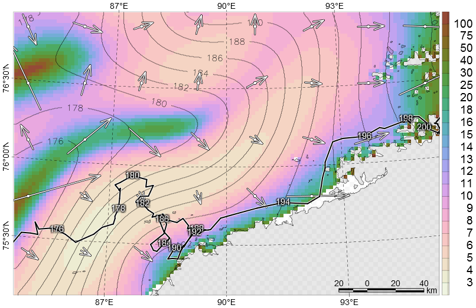 ] .pull-right-25[ .drop-6em.caption[ 🢤 Контур - даты Растр - скорость км/день Вектор - направление ] ] ] ] --- name: H20e0d .toc.sidebar.left-column[ .outline[ # [Введение ](#H3bbf1) # [Методы ](#H0d03e).fg[] ## [Данные ](#H0d03e) ## [Обработка ](#H2d236) ## [Изотоническая регрессия ](#Hd9074) <span class="bullet bullet">[•](#Hd9074)</span><span class="bullet bullet-active">[•](#H20e0d)</span><span class="bullet mslide17m">[•](#H57e7e)</span>.fg[].bg[] # [Результаты](#He23e8) # [Верификация ](#H43113) # [Факторы окружающей среды ](#H18b1d) # [Выводы ](#H1d041) ] ] .toc.mainbar.right-column[ .header.broad[ Изотоническая регрессия ] + Мода – район краткосрочного присутствия льда (обычно для Каспийского моря) + Неубывающая функция – период образования льда + Невозрастающая функция – период исчезновения льда + Инвертированная мода – район краткосрочного периода открытой воды (не для Каспийского моря) ] --- name: H57e7e .toc.sidebar.left-column[ .outline[ # [Введение ](#H3bbf1) # [Методы ](#H0d03e).fg[] ## [Данные ](#H0d03e) ## [Обработка ](#H2d236) ## [Изотоническая регрессия ](#Hd9074) <span class="bullet bullet">[•](#Hd9074)</span><span class="bullet bullet">[•](#H20e0d)</span><span class="bullet bullet-active">[•](#H57e7e)</span>.fg[].bg[] # [Результаты](#He23e8) # [Верификация ](#H43113) # [Факторы окружающей среды ](#H18b1d) # [Выводы ](#H1d041) ] ] .toc.mainbar.right-column[ .header.broad[ Изотоническая регрессия ] Оценка сроков: + Абсцисса пересечения линии изотонической регрессии с линией сплоченности 15% Оценка качества: + Сумма квадратов отклонений (как в линейной регрессии) ] --- name: He23e8 .toc.sidebar.left-column[ .outline[ # [Введение ](#H3bbf1) # [Методы ](#H0d03e) # [Результаты](#He23e8).fg[] ## [Появление льда ](#He23e8) <span class="bullet bullet-active">[•](#He23e8)</span><span class="bullet mslide20m">[•](#He2ae2)</span>.fg[].bg[] ## [Исчезновение льда ](#H3d6e3) ## [Ледовый период ](#ice) # [Верификация ](#H43113) # [Факторы окружающей среды ](#H18b1d) # [Выводы ](#H1d041) ] ] .toc.mainbar.right-column[ .header.broad[ Появление льда ] 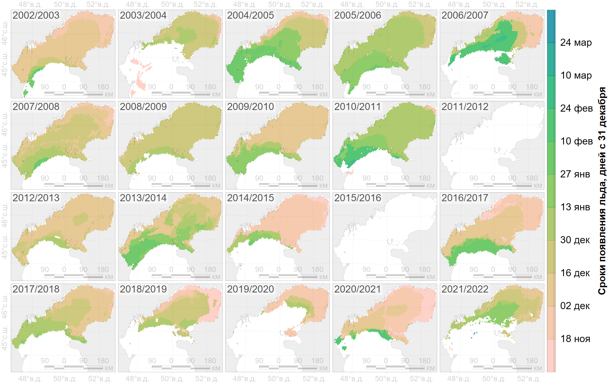 ] --- name: He2ae2 .toc.sidebar.left-column[ .outline[ # [Введение ](#H3bbf1) # [Методы ](#H0d03e) # [Результаты](#He23e8).fg[] ## [Появление льда ](#He23e8) <span class="bullet bullet">[•](#He23e8)</span><span class="bullet bullet-active">[•](#He2ae2)</span>.fg[].bg[] ## [Исчезновение льда ](#H3d6e3) ## [Ледовый период ](#ice) # [Верификация ](#H43113) # [Факторы окружающей среды ](#H18b1d) # [Выводы ](#H1d041) ] ] .toc.mainbar.right-column[ .header.broad[ Появление льда ] 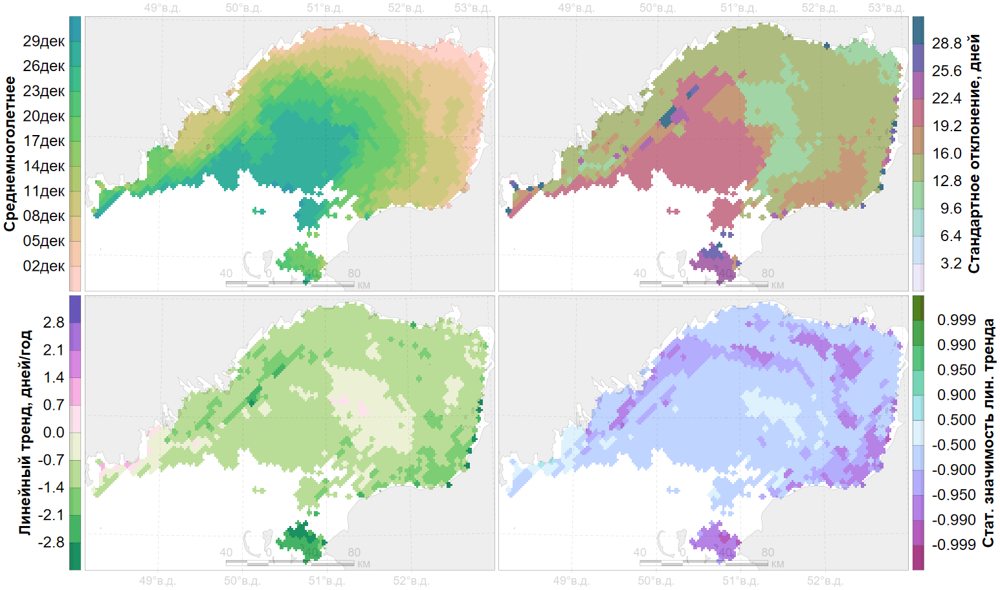 ] --- name: H3d6e3 .toc.sidebar.left-column[ .outline[ # [Введение ](#H3bbf1) # [Методы ](#H0d03e) # [Результаты](#He23e8).fg[] ## [Появление льда ](#He23e8) ## [Исчезновение льда ](#H3d6e3) <span class="bullet bullet-active">[•](#H3d6e3)</span><span class="bullet mslide22m">[•](#H0ca04)</span>.fg[].bg[] ## [Ледовый период ](#ice) # [Верификация ](#H43113) # [Факторы окружающей среды ](#H18b1d) # [Выводы ](#H1d041) ] ] .toc.mainbar.right-column[ .header.broad[ Исчезновение льда ] <img src="assets/yearly-sid-NSIDC.png " width="1330" height="585" bound style="display: block; margin: auto auto auto 0;" /> ] --- name: H0ca04 .toc.sidebar.left-column[ .outline[ # [Введение ](#H3bbf1) # [Методы ](#H0d03e) # [Результаты](#He23e8).fg[] ## [Появление льда ](#He23e8) ## [Исчезновение льда ](#H3d6e3) <span class="bullet bullet">[•](#H3d6e3)</span><span class="bullet bullet-active">[•](#H0ca04)</span>.fg[].bg[] ## [Ледовый период ](#ice) # [Верификация ](#H43113) # [Факторы окружающей среды ](#H18b1d) # [Выводы ](#H1d041) ] ] .toc.mainbar.right-column[ .header.broad[ Исчезновение льда ] 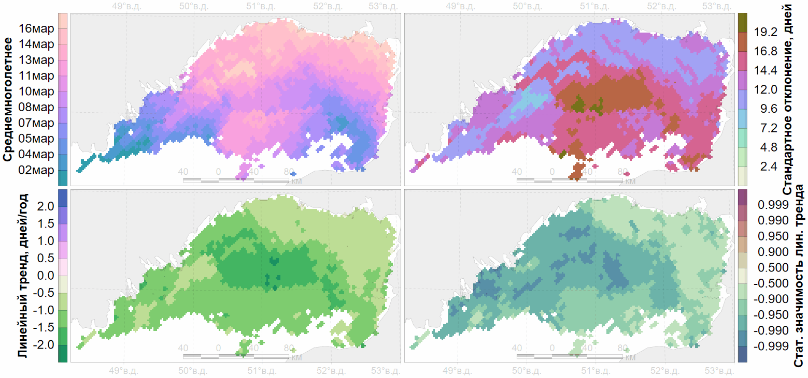 ] --- name: ice .toc.sidebar.left-column[ .outline[ # [Введение ](#H3bbf1) # [Методы ](#H0d03e) # [Результаты](#He23e8).fg[] ## [Появление льда ](#He23e8) ## [Исчезновение льда ](#H3d6e3) ## [Ледовый период ](#ice) <span class="bullet bullet-active">[•](#ice)</span><span class="bullet mslide25m">[•](#H92c4d)</span><span class="bullet mslide26m">[•](#dur)</span><span class="bullet mslide27m">[•](#H7ccab)</span>.fg[].bg[] # [Верификация ](#H43113) # [Факторы окружающей среды ](#H18b1d) # [Выводы ](#H1d041) ] ] .toc.mainbar.right-column[ .header.broad[ Ледовый период ] <div class="figure" style="text-align: left"> 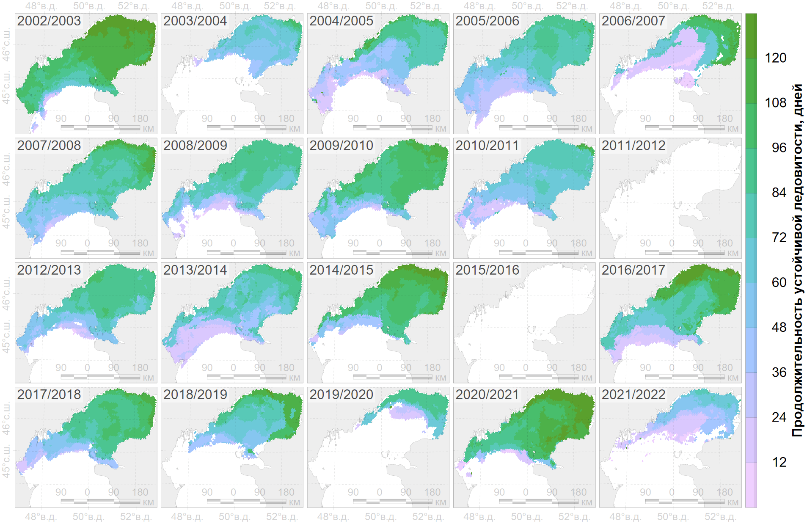 <p class="caption">По фенокартам появления и исчезновения льда</p> </div> Ср. с [по временно́му ряду сплоченности](#dur) ] --- name: H92c4d .toc.sidebar.left-column[ .outline[ # [Введение ](#H3bbf1) # [Методы ](#H0d03e) # [Результаты](#He23e8).fg[] ## [Появление льда ](#He23e8) ## [Исчезновение льда ](#H3d6e3) ## [Ледовый период ](#ice) <span class="bullet bullet">[•](#ice)</span><span class="bullet bullet-active">[•](#H92c4d)</span><span class="bullet mslide26m">[•](#dur)</span><span class="bullet mslide27m">[•](#H7ccab)</span>.fg[].bg[] # [Верификация ](#H43113) # [Факторы окружающей среды ](#H18b1d) # [Выводы ](#H1d041) ] ] .toc.mainbar.right-column[ .header.broad[ Ледовый период ] 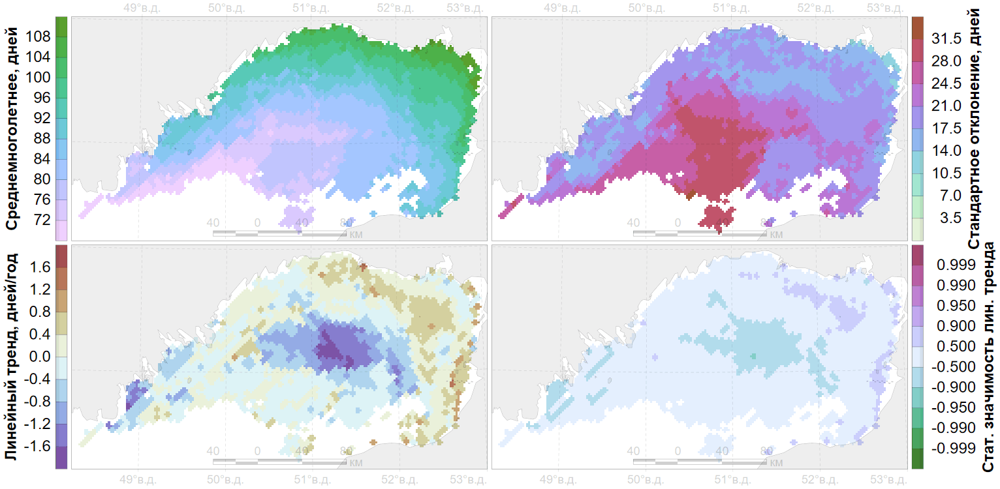 ] --- name: dur .toc.sidebar.left-column[ .outline[ # [Введение ](#H3bbf1) # [Методы ](#H0d03e) # [Результаты](#He23e8).fg[] ## [Появление льда ](#He23e8) ## [Исчезновение льда ](#H3d6e3) ## [Ледовый период ](#ice) <span class="bullet bullet">[•](#ice)</span><span class="bullet bullet">[•](#H92c4d)</span><span class="bullet bullet-active">[•](#dur)</span><span class="bullet mslide27m">[•](#H7ccab)</span>.fg[].bg[] # [Верификация ](#H43113) # [Факторы окружающей среды ](#H18b1d) # [Выводы ](#H1d041) ] ] .toc.mainbar.right-column[ .header.broad[ Ледовый период ] <div class="figure" style="text-align: left"> 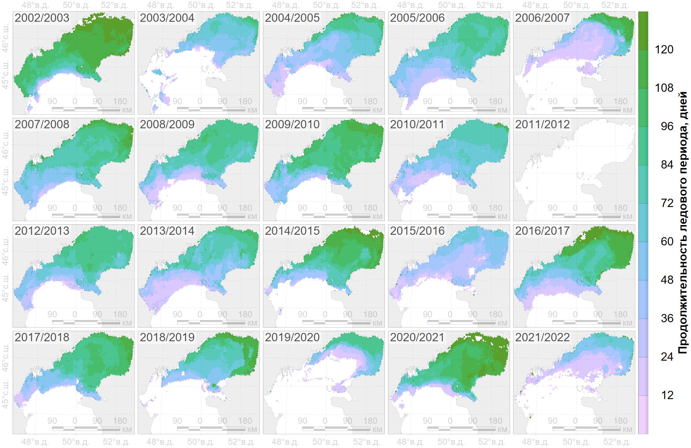 <p class="caption">По временно́му ряду сплоченности</p> </div> Ср. [c разностью сроков исчезновения и появления льда](#ice) ] --- name: H7ccab .toc.sidebar.left-column[ .outline[ # [Введение ](#H3bbf1) # [Методы ](#H0d03e) # [Результаты](#He23e8).fg[] ## [Появление льда ](#He23e8) ## [Исчезновение льда ](#H3d6e3) ## [Ледовый период ](#ice) <span class="bullet bullet">[•](#ice)</span><span class="bullet bullet">[•](#H92c4d)</span><span class="bullet bullet">[•](#dur)</span><span class="bullet bullet-active">[•](#H7ccab)</span>.fg[].bg[] # [Верификация ](#H43113) # [Факторы окружающей среды ](#H18b1d) # [Выводы ](#H1d041) ] ] .toc.mainbar.right-column[ .header.broad[ Ледовый период ] <div class="figure" style="text-align: left"> 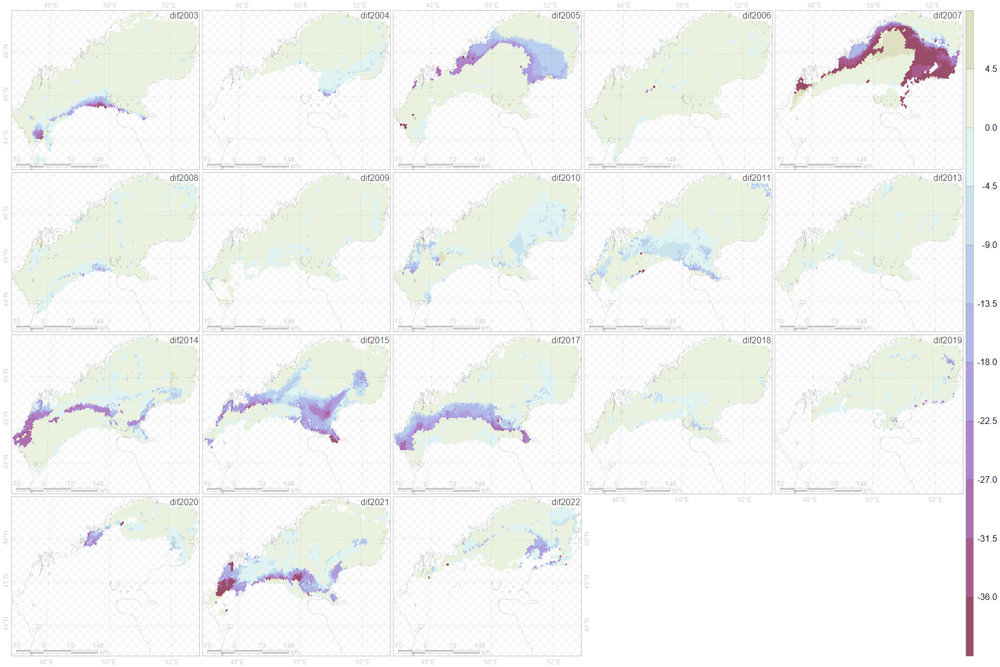 <p class="caption">Разность продолжительности ледового периода</p> </div> ] --- name: H43113 .toc.sidebar.left-column[ .outline[ # [Введение ](#H3bbf1) # [Методы ](#H0d03e) # [Результаты](#He23e8) # [Верификация ](#H43113).fg[].bg[] ## [Появление льда ](#Hb9293) ## [Исчезновение льда ](#H73e73) ## [Ледовый период ](#Hb049b) ## [Площадь льда ](#He460d) # [Факторы окружающей среды ](#H18b1d) # [Выводы ](#H1d041) ] ] .toc.mainbar.right-column[ .header.broad[ Верификация ] .clarify[ ## MERRA2 + Данные ретроспективного анализ поверхностных океанографических данных MERRA-2 <span class="cite hovertext" data-hover="MERRA-2 tavg1_2d_ocn_Nx: 2d,1-Hourly,Time-Averaged,Single-Level,Assimilation,Ocean Surface Diagnostics V5.12.4"><a name=cite-merra2ocn></a>([Global Modeling And Assimilation Office, 2015](#bib))</span> + Пространственное разрешение: 0.500° × 0.625° + Временное разрешение: 1 час + Временной охват: с 01 января 1980 г. по 02 октября 2024 г. ] .clarify[ ## ERA5 + Данные сплоченности морского льда в ежедневной оценке глобальной температуры поверхности моря на основе спутниковых наблюдений <span class="cite hovertext" data-hover="Sea surface temperature daily data from 1981 to present derived from satellite observations"><a name=cite-ECMWF_SST></a>([Lopez, 2019](#bib))</span> + Пространственное разрешение 0.05° × 0.05° + Временное разрешение: 1 сутки + Временной охват: с 1981 по 2022 гг. ] ] --- name: Hb9293 .toc.sidebar.left-column[ .outline[ # [Введение ](#H3bbf1) # [Методы ](#H0d03e) # [Результаты](#He23e8) # [Верификация ](#H43113).fg[] ## [Появление льда ](#Hb9293) <span class="bullet bullet-active">[•](#Hb9293)</span><span class="bullet mslide30m">[•](#Hfbb51)</span>.fg[].bg[] ## [Исчезновение льда ](#H73e73) ## [Ледовый период ](#Hb049b) ## [Площадь льда ](#He460d) # [Факторы окружающей среды ](#H18b1d) # [Выводы ](#H1d041) ] ] .toc.mainbar.right-column[ .header.broad[ Появление льда ] 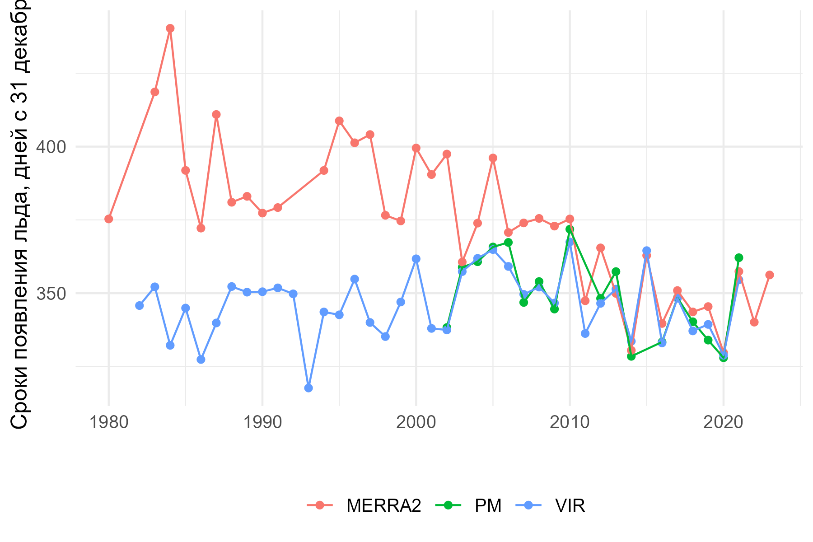 |data |min |max |avg |slope |obs | |:------|:------------|:------------|:----------|:------------------|:--------------| |NSIDC |23Nov (2020) |07Jan (2010) |15Dec±13.7 |-1.0±0.5 (S=0.94) |20 (2002-2021) | |MERRA2 |25Nov (2020) |01Feb (2002) |28Dec±19.9 |-2.5±0.5 (S>0.999) |20 (2002-2021) | |ERA5 |24Nov (2020) |02Jan (2010) |14Dec±11.5 |-1.0±0.4 (S=0.97) |20 (2002-2021) | |MERRA2 |25Nov (2020) |15Mar (1984) |10Jan±24.8 |-1.5±0.2 (S>0.999) |44 (1980-2023) | |ERA5 |14Nov (1993) |02Jan (2010) |12Dec±11.2 |+0.1±0.2 (S=0.40) |40 (1982-2021) | ] --- name: Hfbb51 .toc.sidebar.left-column[ .outline[ # [Введение ](#H3bbf1) # [Методы ](#H0d03e) # [Результаты](#He23e8) # [Верификация ](#H43113).fg[] ## [Появление льда ](#Hb9293) <span class="bullet bullet">[•](#Hb9293)</span><span class="bullet bullet-active">[•](#Hfbb51)</span>.fg[].bg[] ## [Исчезновение льда ](#H73e73) ## [Ледовый период ](#Hb049b) ## [Площадь льда ](#He460d) # [Факторы окружающей среды ](#H18b1d) # [Выводы ](#H1d041) ] ] .toc.mainbar.right-column[ .header.broad[ Появление льда ] 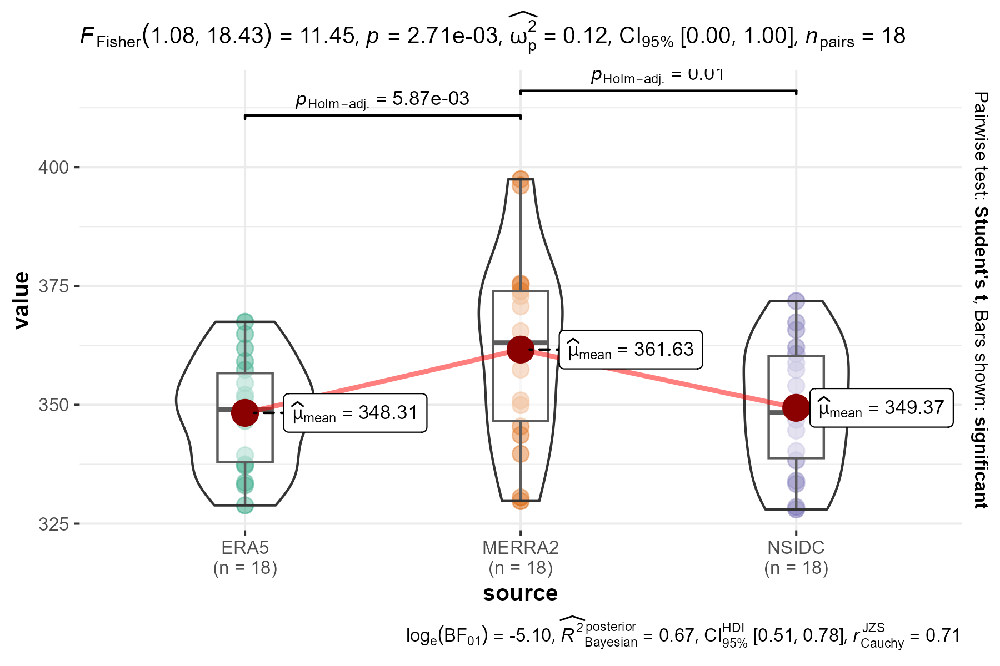 r(ERA5,NSIDC)=0.9691 ] --- name: H73e73 .toc.sidebar.left-column[ .outline[ # [Введение ](#H3bbf1) # [Методы ](#H0d03e) # [Результаты](#He23e8) # [Верификация ](#H43113).fg[] ## [Появление льда ](#Hb9293) ## [Исчезновение льда ](#H73e73) <span class="bullet bullet-active">[•](#H73e73)</span><span class="bullet mslide32m">[•](#H15bb7)</span>.fg[].bg[] ## [Ледовый период ](#Hb049b) ## [Площадь льда ](#He460d) # [Факторы окружающей среды ](#H18b1d) # [Выводы ](#H1d041) ] ] .toc.mainbar.right-column[ .header.broad[ Исчезновение льда ] 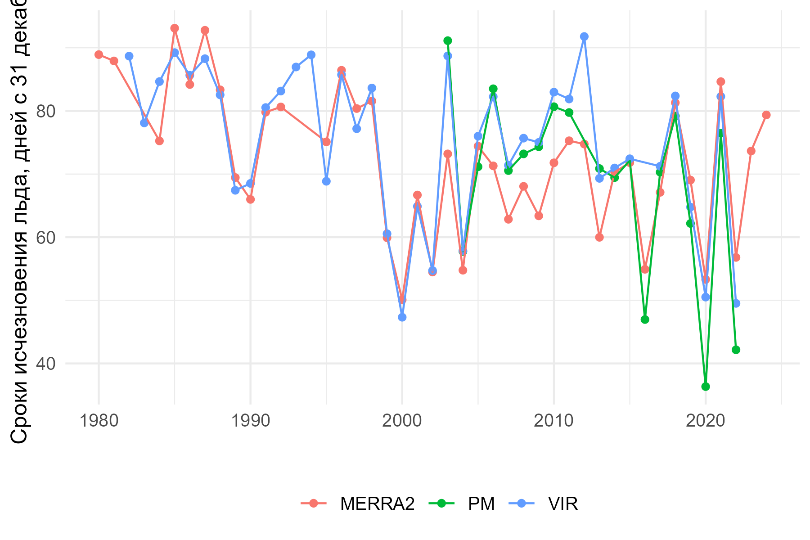 |data |min |max |avg |slope |obs | |:------|:------------|:------------|:----------|:-----------------|:--------------| |NSIDC |05Feb (2020) |01Apr (2003) |11Mar±13.5 |-1.1±0.5 (S=0.97) |20 (2003-2022) | |MERRA2 |22Feb (2020) |26Mar (2021) |09Mar±8.6 |+0.0±0.3 (S=0.10) |20 (2003-2022) | |ERA5 |19Feb (2022) |30Mar (2003) |14Mar±11.1 |-0.7±0.4 (S=0.91) |20 (2003-2022) | |MERRA2 |19Feb (2000) |03Apr (1985) |13Mar±11.3 |-0.4±0.1 (S>0.99) |45 (1980-2024) | |ERA5 |16Feb (2000) |01Apr (2012) |16Mar±11.9 |-0.4±0.1 (S=0.99) |41 (1982-2022) | ] --- name: H15bb7 .toc.sidebar.left-column[ .outline[ # [Введение ](#H3bbf1) # [Методы ](#H0d03e) # [Результаты](#He23e8) # [Верификация ](#H43113).fg[] ## [Появление льда ](#Hb9293) ## [Исчезновение льда ](#H73e73) <span class="bullet bullet">[•](#H73e73)</span><span class="bullet bullet-active">[•](#H15bb7)</span>.fg[].bg[] ## [Ледовый период ](#Hb049b) ## [Площадь льда ](#He460d) # [Факторы окружающей среды ](#H18b1d) # [Выводы ](#H1d041) ] ] .toc.mainbar.right-column[ .header.broad[ Исчезновение льда ] 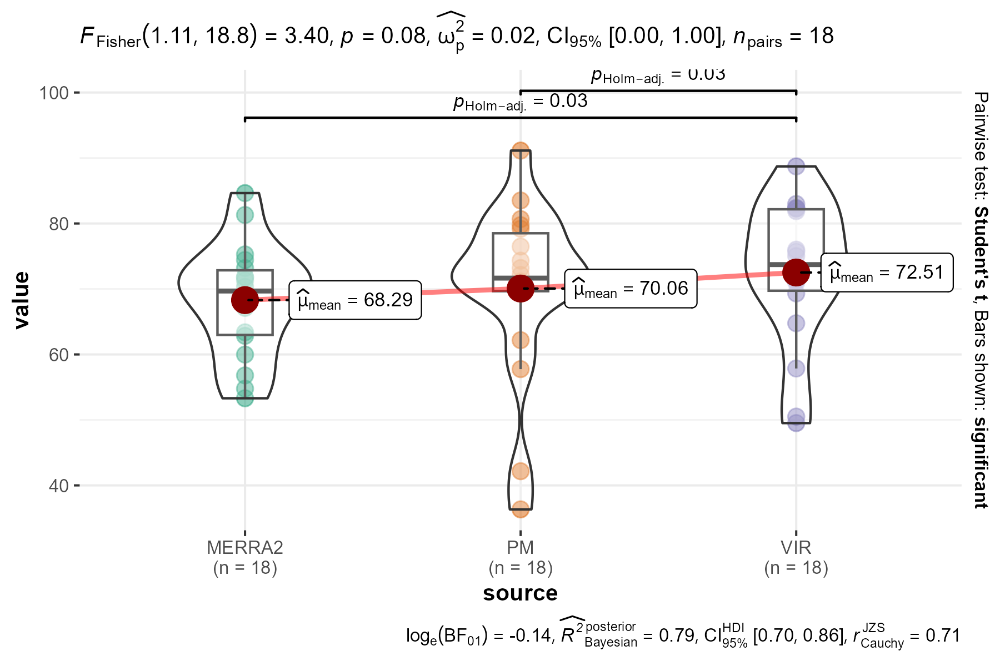 r(ERA5,NSIDC)=0.9712 ] --- name: Hb049b .toc.sidebar.left-column[ .outline[ # [Введение ](#H3bbf1) # [Методы ](#H0d03e) # [Результаты](#He23e8) # [Верификация ](#H43113).fg[] ## [Появление льда ](#Hb9293) ## [Исчезновение льда ](#H73e73) ## [Ледовый период ](#Hb049b) <span class="bullet bullet-active">[•](#Hb049b)</span><span class="bullet mslide34m">[•](#Hfcd8d)</span>.fg[].bg[] ## [Площадь льда ](#He460d) # [Факторы окружающей среды ](#H18b1d) # [Выводы ](#H1d041) ] ] .toc.mainbar.right-column[ .header.broad[ Ледовый период ] 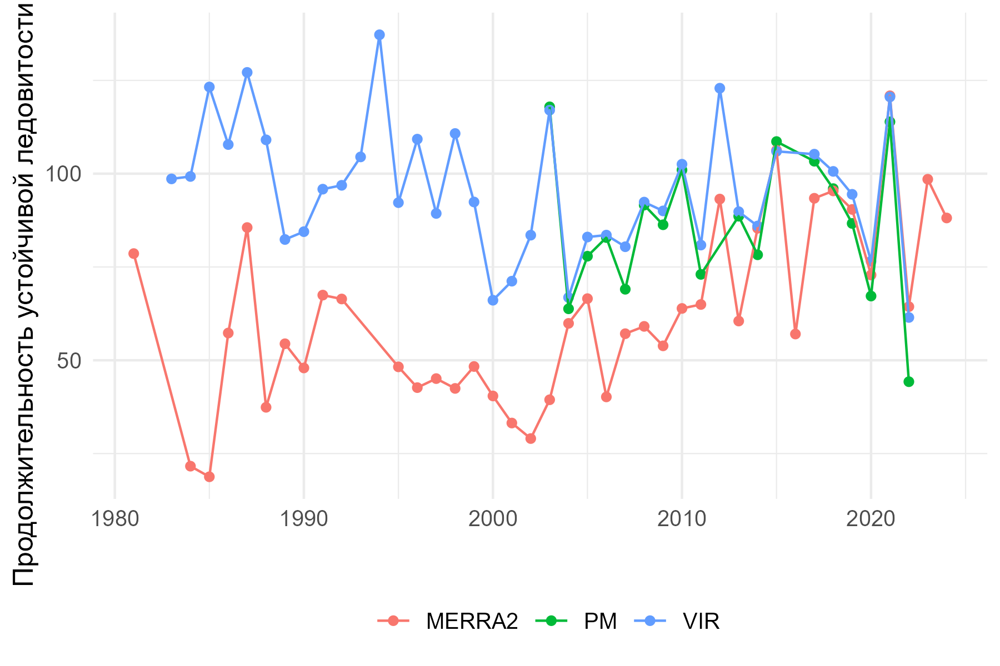 |data |min |max |avg |slope |obs | |:------|:---------|:----------|:-----|:------------------|:--------------| |NSIDC |44 (2022) |118 (2003) |86±19 |-0.2±0.8 (S=0.16) |20 (2003-2022) | |MERRA2 |39 (2003) |121 (2021) |72±22 |+2.6±0.6 (S>0.999) |20 (2003-2022) | |ERA5 |61 (2022) |121 (2021) |91±16 |+0.2±0.6 (S=0.26) |20 (2003-2022) | |MERRA2 |19 (1985) |121 (2021) |62±24 |+1.1±0.2 (S>0.999) |44 (1981-2024) | |ERA5 |61 (2022) |137 (1994) |96±18 |-0.4±0.2 (S=0.89) |40 (1983-2022) | ] --- name: Hfcd8d .toc.sidebar.left-column[ .outline[ # [Введение ](#H3bbf1) # [Методы ](#H0d03e) # [Результаты](#He23e8) # [Верификация ](#H43113).fg[] ## [Появление льда ](#Hb9293) ## [Исчезновение льда ](#H73e73) ## [Ледовый период ](#Hb049b) <span class="bullet bullet">[•](#Hb049b)</span><span class="bullet bullet-active">[•](#Hfcd8d)</span>.fg[].bg[] ## [Площадь льда ](#He460d) # [Факторы окружающей среды ](#H18b1d) # [Выводы ](#H1d041) ] ] .toc.mainbar.right-column[ .header.broad[ Ледовый период ] 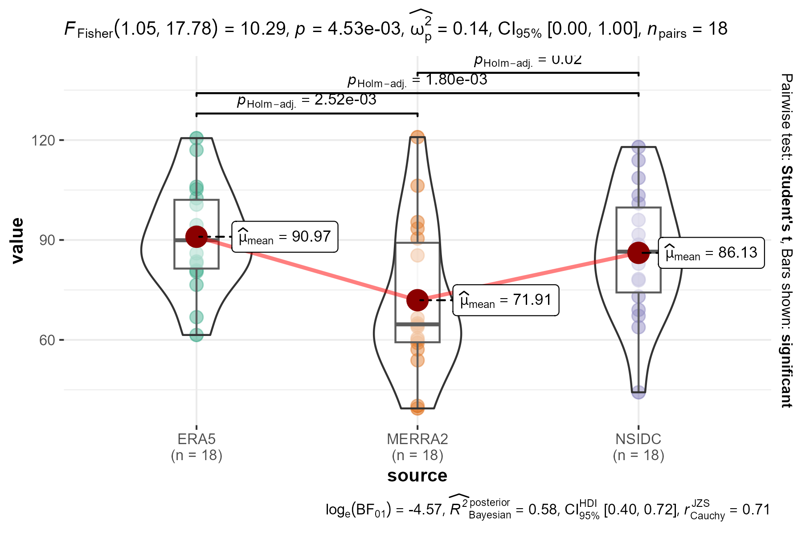 r(ERA5,NSIDC)=0.9776 ] --- name: He460d .toc.sidebar.left-column[ .outline[ # [Введение ](#H3bbf1) # [Методы ](#H0d03e) # [Результаты](#He23e8) # [Верификация ](#H43113).fg[] ## [Появление льда ](#Hb9293) ## [Исчезновение льда ](#H73e73) ## [Ледовый период ](#Hb049b) ## [Площадь льда ](#He460d) <span class="bullet bullet-active">[•](#He460d)</span><span class="bullet mslide36m">[•](#H12d6b)</span>.fg[].bg[] # [Факторы окружающей среды ](#H18b1d) # [Выводы ](#H1d041) ] ] .toc.mainbar.right-column[ .header.broad[ Площадь льда ] 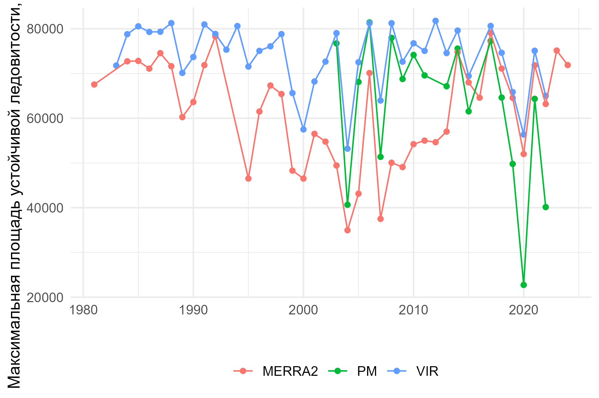 |data |min |max |avg |slope |obs | |:------|:---------|:---------|:-----|:-----------------|:--------------| |NSIDC |23 (2020) |81 (2006) |63±16 |-1.0±0.6 (S=0.90) |20 (2003-2022) | |MERRA2 |35 (2004) |79 (2017) |58±13 |+1.4±0.4 (S>0.99) |20 (2003-2022) | |ERA5 |53 (2004) |81 (2006) |72±8 |-0.2±0.3 (S=0.43) |20 (2003-2022) | |MERRA2 |35 (2004) |79 (2017) |62±12 |-0.1±0.2 (S=0.37) |44 (1981-2024) | |ERA5 |53 (2004) |82 (2012) |74±7 |-0.2±0.1 (S=0.92) |40 (1983-2022) | ] --- name: H12d6b .toc.sidebar.left-column[ .outline[ # [Введение ](#H3bbf1) # [Методы ](#H0d03e) # [Результаты](#He23e8) # [Верификация ](#H43113).fg[] ## [Появление льда ](#Hb9293) ## [Исчезновение льда ](#H73e73) ## [Ледовый период ](#Hb049b) ## [Площадь льда ](#He460d) <span class="bullet bullet">[•](#He460d)</span><span class="bullet bullet-active">[•](#H12d6b)</span>.fg[].bg[] # [Факторы окружающей среды ](#H18b1d) # [Выводы ](#H1d041) ] ] .toc.mainbar.right-column[ .header.broad[ Площадь льда ] 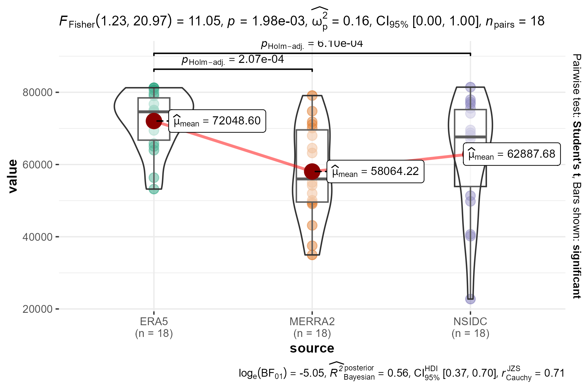 r(ERA5,NSIDC)=0.9415 ] --- name: H18b1d .toc.sidebar.left-column[ .outline[ # [Введение ](#H3bbf1) # [Методы ](#H0d03e) # [Результаты](#He23e8) # [Верификация ](#H43113) # [Факторы окружающей среды ](#H18b1d).fg[] ## [Пространственное распределение ](#H18b1d).fg[].bg[] # [Выводы ](#H1d041) ] ] .toc.mainbar.right-column[ .header.broad[ Пространственное распределение ] + Температура воздуха + Скорость и направление ветра + Температура воды + ~~Солёность воды~~ + Уровень моря ] --- name: H1d041 .toc.sidebar.left-column[ .outline[ # [Введение ](#H3bbf1) # [Методы ](#H0d03e) # [Результаты](#He23e8) # [Верификация ](#H43113) # [Факторы окружающей среды ](#H18b1d) # [Выводы ](#H1d041).fg[].bg[] ] ] .toc.mainbar.right-column[ .header.broad[ Выводы ] .single[ + Ежесуточные данные по ледовому покрытия Каспийского моря за последние две декады либо имеют очень низкое пространственное разрешение, либо не доступны в режиме реального времени. + Ледовые фенокарты на основе оценок ледового покрова со спутниковых измерениях пассивного микроволнового зондирования в сравнении с видимым и инфракрасным спектром обеспечивают близкие результаты, что может использоваться в ассимиляции продуктов. + Сроки ледообразования и ледотаяния, продолжительность ледового покрова и площадь максимального распространения льдов имеют высокую вариабельность. Статистически значимая тенденция отмечается в уменьшении площади льдов и в более раннем ледотаянии. + Тепловой режим в предшествующий осенний период влияет на смещение сроков ледообразования, тогда как сроки ледотаяния больше зависит от текущих условий прогрева воздуха. ] ] --- name: finalize .toc.sidebar.left-column[ .outline[ # [Введение ](#H3bbf1) # [Методы ](#H0d03e) # [Результаты](#He23e8) # [Верификация ](#H43113) # [Факторы окружающей среды ](#H18b1d) # [Выводы ](#H1d041) ] ] .toc.mainbar.right-column[ .onlyremark[ .center[.huge[.huge[Спасибо за внимание]]] ] .pulling[ .pull-left-40[ ### Благодарности + Организаторы ] .pull-right-60[ ### О докладчике Платонов Никита Геннадьевич с.н.с. ИПЭЭ РАН, к.т.н. <svg aria-hidden="true" role="img" viewBox="0 0 512 512" style="height:1em;width:1em;vertical-align:-0.125em;margin-left:auto;margin-right:auto;font-size:inherit;fill:currentColor;overflow:visible;position:relative;"><path d="M64 112c-8.8 0-16 7.2-16 16v22.1L220.5 291.7c20.7 17 50.4 17 71.1 0L464 150.1V128c0-8.8-7.2-16-16-16H64zM48 212.2V384c0 8.8 7.2 16 16 16H448c8.8 0 16-7.2 16-16V212.2L322 328.8c-38.4 31.5-93.7 31.5-132 0L48 212.2zM0 128C0 92.7 28.7 64 64 64H448c35.3 0 64 28.7 64 64V384c0 35.3-28.7 64-64 64H64c-35.3 0-64-28.7-64-64V128z"/></svg> [platonov@sevin.ru](mailto:platonov@sevin.ru) <svg aria-hidden="true" role="img" viewBox="0 0 496 512" style="height:1em;width:0.97em;vertical-align:-0.125em;margin-left:auto;margin-right:auto;font-size:inherit;fill:currentColor;overflow:visible;position:relative;"><path d="M248,8C111.033,8,0,119.033,0,256S111.033,504,248,504,496,392.967,496,256,384.967,8,248,8ZM362.952,176.66c-3.732,39.215-19.881,134.378-28.1,178.3-3.476,18.584-10.322,24.816-16.948,25.425-14.4,1.326-25.338-9.517-39.287-18.661-21.827-14.308-34.158-23.215-55.346-37.177-24.485-16.135-8.612-25,5.342-39.5,3.652-3.793,67.107-61.51,68.335-66.746.153-.655.3-3.1-1.154-4.384s-3.59-.849-5.135-.5q-3.283.746-104.608,69.142-14.845,10.194-26.894,9.934c-8.855-.191-25.888-5.006-38.551-9.123-15.531-5.048-27.875-7.717-26.8-16.291q.84-6.7,18.45-13.7,108.446-47.248,144.628-62.3c68.872-28.647,83.183-33.623,92.511-33.789,2.052-.034,6.639.474,9.61,2.885a10.452,10.452,0,0,1,3.53,6.716A43.765,43.765,0,0,1,362.952,176.66Z"/></svg> [@NikitaPlatonov](https://t.me/NikitaPlatonov) Программа изучения белого медведя в российской Арктике Постоянно действующая экспедиция РАН ИПЭЭ РАН - 90 лет ] ] ] --- name: bib layout: false class: notable .footnote.small.bibliography[ <div class="backtoshow"><a href="javascript:window.history.back();">↩</a></div> **** <a name=bib-lakeice0726></a>[Du, J., J. Kimball, and C. Duguay](#bib) (2017). _Daily Lake Ice Phenology Time Series Derived from AMSR-E and AMSR2_. Version 1. DOI: [10.5067/HT4NQO7ZJF7M](https://doi.org/10.5067%2FHT4NQO7ZJF7M). (Visited on Jan. 27, 2024). <a name=bib-merra2ocn></a>[Global Modeling And Assimilation Office](#bib) (2015). _MERRA-2 tavg1_2d_ocn_Nx: 2d,1-Hourly,Time-Averaged,Single-Level,Assimilation,Ocean Surface Diagnostics V5.12.4_. Maintained by Steven Pawson. Greenbelt, MD, USA. DOI: [10.5067/Y67YQ1L3ZZ4R](https://doi.org/10.5067%2FY67YQ1L3ZZ4R). (Visited on Oct. 23, 2024). <a name=bib-ECMWF_SST></a>[Lopez, A.](#bib) (2019). _Sea surface temperature daily data from 1981 to present derived from satellite observations_. DOI: [10.24381/CDS.CF608234](https://doi.org/10.24381%2FCDS.CF608234). (Visited on Oct. 24, 2024). <a name=bib-Turner1997></a>[Turner, T. and P. Wollan](#bib) (1997). "Locating a maximum using isotonic regression". In: _Computational Statistics & Data Analysis_ 25.3, pp. 305-320. DOI: [10.1016/s0167-9473(97)00009-1](https://doi.org/10.1016%2Fs0167-9473%2897%2900009-1). <a name=bib-Rozhnov2017_hutuda_ru></a>[Рожнов, В., Н. Платонов, С. Найденко, И. Мордвинцев, and Е. Иванов](#bib) (2017). "Перемещение самки белого медведя в Карском море в период летнего таяния льда". In: _Доклады Академии наук_, pp. 359-363. DOI: [10.7868/S0869565217030276](https://doi.org/10.7868%2FS0869565217030276). ] --- layout: false name: fn class: notable hide: true .footnote.small[ **** <div class="backtoshow"><a href="javascript:window.history.back();">↩</a></div>1. В данной работе – не кригинг ]